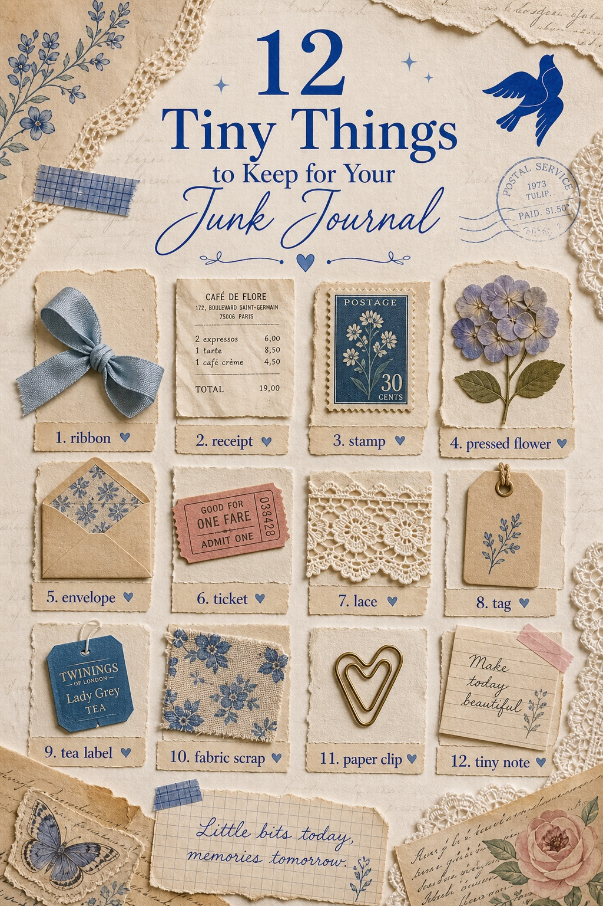
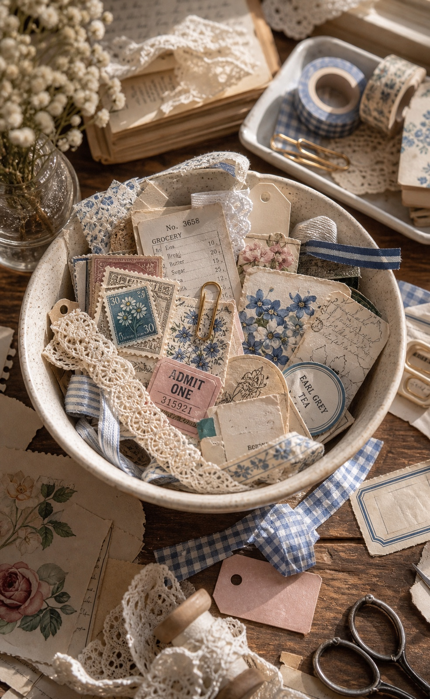
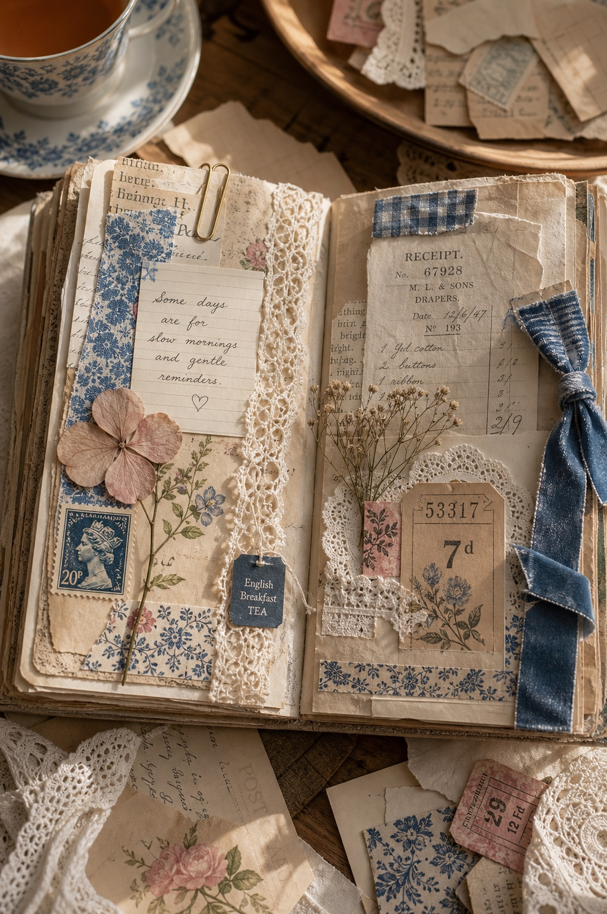

The smallest scraps are usually the ones that make a page feel real. A ribbon from packaging, a receipt from coffee, a stamp, a tea label, a tiny note: none of them look important alone, but together they become memory.

Keep the Pieces That Still Have a Feeling
You do not need to save every scrap. Keep the ones that make you pause for half a second: a color you love, a texture that feels old, a label from a nice day, or a piece that already looks like it belongs on a page.

Put Them in One Little Bowl
The easiest system is one small bowl or tray. Not a whole box, not a new storage project, just one place for pieces that might become useful later.

Use Three Scraps Before You Add More
When you sit down to make a page, choose three tiny pieces first. A paper piece, a texture piece, and a memory piece are enough to start. After that, add only what makes the page feel more true.
Tiny things are not clutter when they help the page remember something.